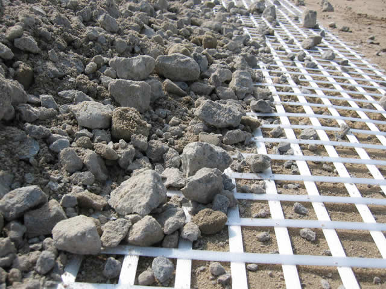

Geosynthetic Geogrid Products
Uniaxial Geogrids for Retaining Walls | Biaxial Geogrids for Base Reinforcement
Uniaxial geogrids are are high performance products for reinforcing soil. Used for constructing retaining walls and slopes, they increase substantially the land available to residential, commercial and industrial products.
Biaxial geogrids are ideal when covering soft soils to increase significantly the performance of the sub-base and base aggregate materials. Biaxial geogrids are excellent products for increasing the effective strength of structures such as paved and unpaved roads, parking lots, and temporary access roads.
Distributing dynamic loads over wider surface area minimizes structural points-of-failure while increasing load-bearing capacity. Biaxial reinforcement geogrids can decrease base course aggregate material requirements by up to 30%.
Widths of 6' or 12' are available for retaining wall applications. Products are available to meet all your specifications.
Uniaxial Geogrid Retaining Wall Applications
- Steep slope and embankment reinforcement
- Retaining walls
- Sub-grade stabilization
- Waste containment
Biaxial Geogrid Base Reinforcement Applications
- Paved roads
- Unpaved roads
- Parking lots
- Haul raods